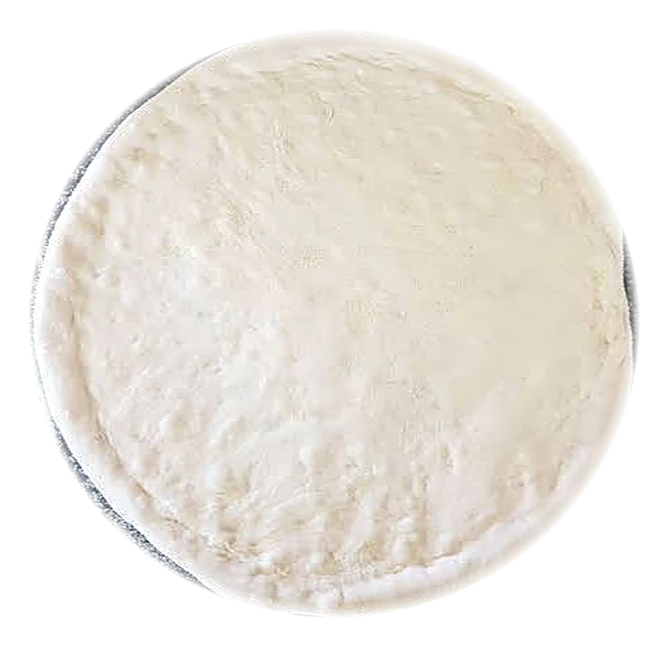
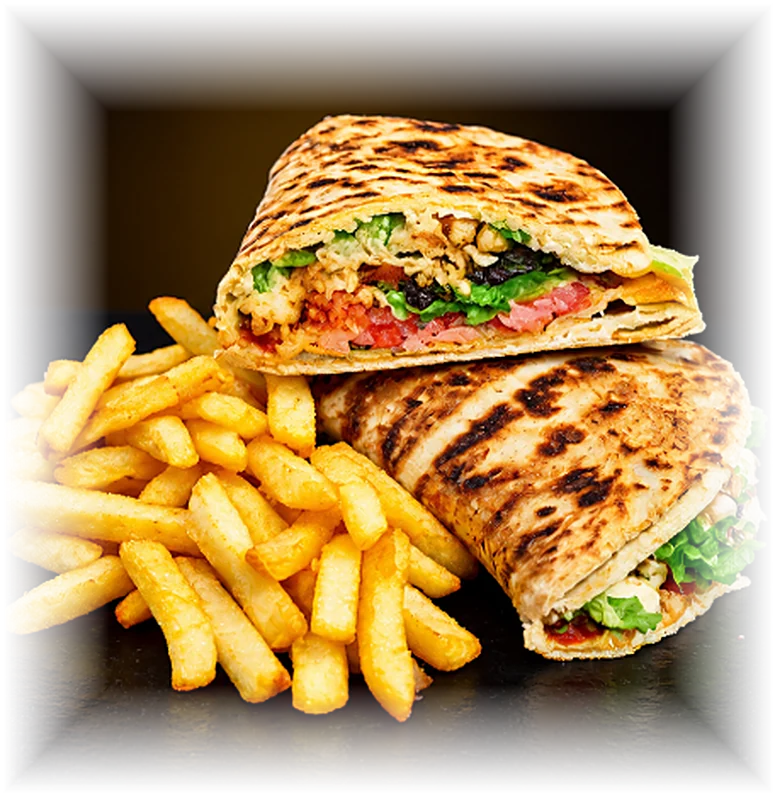

La faim n'attend pas.
01 · PétrirLa pâte, étalée minute sur le comptoir.
02 · EmpilerHarissa, mozzarella, chawarma, frites, salade.
03 · Plier et dorerPrêt. بنّة ما كيفهاش


Comment on monte un makloub
Cinq gestes, toujours les mêmes, devant vous au comptoir. Voilà ce qui se passe entre votre commande et la première bouchée.
-
Étape 01
Pétrir
La pâte est travaillée sur place, à la main, puis étalée en un grand disque fin.
-
Étape 02
Saucer
Une couche de harissa, un trait de mayonnaise, puis la mozzarella sur toute la surface.
-
Étape 03
Garnir
Chawarma, escalope ou cordon bleu, oignon sauté, laitue, frites. Vous choisissez, on charge.
-
Étape 04
Plier et dorer
On referme, on passe au four. La pâte gonfle, dore et croustille sur les bords.
À vous de dorer
Restez appuyé sur le cercle jusqu'à ce qu'il soit plein.
Doré, croustillant.
Il ne manque plus que vous. Choisissez votre makloub plus bas.
-
Étape 05
Servir chaud
Coupé en deux, servi avec les frites. À emporter, ou livré chez vous.
Commander le mienPlus de vidéos de la cuisine sur Instagram : vidéo 1 · vidéo 2
La carte
Les prix du menu affiché en restaurant. Choisissez, personnalisez, commandez.
Les suppléments
Les prix du panneau en restaurant. À ajouter dans n'importe quel plat, depuis sa fiche.
Deux adresses. Une carte.
Choisissez le resto le plus proche. Le menu et les prix sont les mêmes.